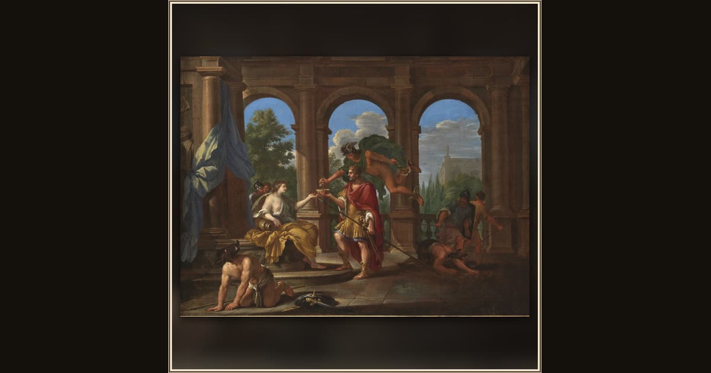

Circe and Odysseus
Lauri, Filippo; Cortona, Pietro da · 1611–1669 · Statens Museum for Kunst · Copenhagen, Denmark
Circe meets Ulysses amid her enchanted landscape, where human companions and transformed animals share the same strange space. Explore its place in Book X of the Odyssey.